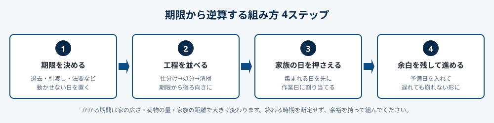

実家じまいの計画を立てるとき、「いつから始めるか」よりも先に決めたいのが「いつまでに終わらせたいか」です。退去や引渡しのような期限がある場合、手前から順に予定を積み上げると、最後の工程が期限に間に合わなくなりがちです。この記事では、期限から逆算して工程を並べる組み方を整理します。各工程でやること自体は実家じまいの進め方の記事が前提です。
まず「動かせない日」を決める

逆算の起点になる「動かせない日」には、次のようなものがあります。
- 賃貸物件の退去日、施設への入居日など、住まいを空ける日
- 売却が決まっている場合の引渡し日
- 四十九日・一周忌などの法要で親族が集まる日
- 解体工事やリフォームの着工日（予約済みの場合）
- 相続登記など、法定期限のある手続きの期限
期限がまだ決まっていない場合は、「この頃までに目途をつけたい」という目安の日でも構いません。起点が1つあるだけで、工程の置き方が具体的になります。相続に伴う手続きの期限については、実家を相続したら最初にやることの記事もあわせて確認してください。
工程を後ろから並べる
期限の直前：清掃・最終確認・引渡し
最後に来るのは、家を空にした後の清掃、残置物の最終確認、鍵の返却や引渡しの立会いです。ここは期限の直前に置くしかない工程なので、まず期限の数日前〜前日あたりに固定します。
その前：大型家具・家電の搬出と処分
清掃の前には、家の中が空になっている必要があります。大型家具や家電の搬出、処分業者や買取の手配はこの段階です。業者を使う場合は見積りと予約に時間がかかることがあるため、作業日よりも早めに動き始めます。業者に頼む場合の確認点は遺品整理業者に頼む場合の記事にまとめています。
さらに前：部屋ごとの仕分けと形見分け
搬出の対象を決めるには、仕分けが終わっている必要があります。「残す・譲る・処分する」の判断と、形見分けの確認は、家族が集まれる日にまとめて進めるのが効率的です。判断に迷うものは保留にして先へ進める方法もあります。
一番前：貴重品・書類の探索と家族の話し合い
通帳、権利証、保険証券などの探索と、方針・期限の話し合いは最初に置きます。書類のありかが分からないと、相続や解約の手続きが後ろ倒しになり、全体の予定に影響します。
月単位の組み方の例
たとえば「3か月後の月末を目途にする」場合の並べ方は、次のような形になります。これは工程の順番を示す一例で、実際にかかる期間は家の広さ・荷物の量・家族の距離によって大きく前後します。
3か月で組む場合の工程の置き方（一例）
- 1か月目：家族の話し合い、貴重品・書類の探索、手続きの期限の確認
- 2か月目：部屋ごとの仕分けと形見分け、処分・買取・業者の見積りと予約
- 3か月目：搬出と処分、清掃、最終確認と引渡し（月末の期限に合わせる）
- 各月の終わりに予備日を1〜2日置き、遅れを吸収できるようにする
遠方に住んでいて月1回しか通えない場合は、同じ工程を「通える日」に割り当て直し、月数を延ばして組みます。期間を短くすること自体が目的ではないため、無理のないペースを優先してください。
家族の日程に合わせる
実家じまいの作業日は、家族が集まれる日が前提になります。法要や連休など「もともと集まる日」を作業の起点にすると、日程調整の手間が減ります。役割分担（仕分けの判断をする人、手続きを担当する人、当日の搬出に立ち会う人）を先に決めておくと、当日の行き違いが少なくなります。どうしても来られない家族には、仕分けの対象を写真で共有して確認してもらう方法もあります。
遅れたときのために余白を残す
予定どおりに進まないことは珍しくありません。天候、業者の予約状況、家族の体調などで作業日がずれる前提で、期限の直前に大きな工程を詰め込まない組み方にしておきます。見直しの際は、先送りできない工程（期限のある手続き、退去・引渡しの準備）と、先送りできる工程（売却の判断、当面の保管など）を分けて考えると、残りの予定を並べ直しやすくなります。
よくある質問
- 実家じまいはどのくらいの期間がかかりますか
- 家の広さ、荷物の量、家族が集まれる頻度、業者の予約状況などで大きく変わるため、一概には言えません。数週間で片付く場合もあれば、月単位で少しずつ進める場合もあります。この記事では期間そのものではなく、期限から逆算して工程を並べる考え方を紹介しています。具体的な予定は、家の状況を見ながら組んでください。
- 期限まで時間がない場合はどうすればよいですか
- まず、期限に直結する工程（退去や引渡しの準備）を最優先に置きます。仕分けや搬出の一部を業者に任せたり、判断に迷う荷物を一時保管サービスに預けたりする方法もあります。業者に頼む場合の確認点は、遺品整理業者に頼む場合の記事にまとめています。
- 法要の日程と片付けを合わせるメリットはありますか
- 四十九日や一周忌など親族が集まる機会は、形見分けや今後の方針の話し合いを進めやすいタイミングです。ただし、法要の前後に重い作業を詰め込むと負担が大きくなるため、話し合いと確認だけを合わせ、搬出などの作業日は分ける組み方もあります。
- 予定が遅れたらどう見直しますか
- 動かせない日（退去・引渡しなど）を基準に、残りの工程を並べ直します。その際、先送りできる工程（売却の判断など）と、先送りできない工程（期限のある手続き・引渡し準備）を分けて考えると、どこを急ぐべきかが見えます。遅れを取り戻そうと作業を詰め込みすぎないことも大切です。